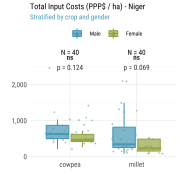
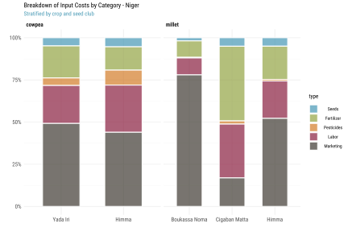
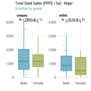
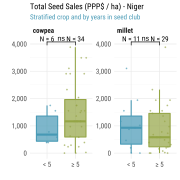
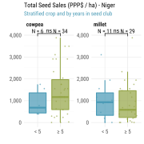
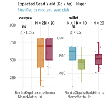

Niger
Notes:
- 1 Int’l $ = 257.60 XOF (CFA) using 2020 World Bank PPP conversion rates (1 Int’l $ = 1 USD)
- All costs are reported per hectare. Inspection, certification and other marketing costs are assumed for the entire farm. Labeling and packaging are per kg.
- Some farmers grow multiple crops
Survey Codebook
xrate <- 257.60
# Load respondent data
hh <- fread("../data/nre/hh.csv")
group <- fread("../data/nre/group.csv")
# Load complete codebook
lbl <- fread("../data/codebook.csv")There are 24 variables and 80 observations in this set. A detailed codebook is shown below.
kbl(lbl[label %in% names(hh)], align="llccc", caption="Survey Codebook")| code | label | type | unit | constructed |
|---|---|---|---|---|
| adm2_nm | District | character | class | FALSE |
| adm3_nm | Location | character | class | FALSE |
| group | Group | character | class | FALSE |
| code | Code | character | class | FALSE |
| age | Age | numeric | years | FALSE |
| gender | Sex | character | class | FALSE |
| crop | Crop | character | class | FALSE |
| member_years | How long have you been a member of this group? | numeric | years | FALSE |
| seed_ha_lcu | Cost seed per ha (LCU) | numeric | lcu/ha | FALSE |
| fert_ha_lcu | Cost of fertilizer per ha (LCU) | numeric | lcu/ha | FALSE |
| pest_ha_lcu | Cost of pesticide per ha (LCU) | numeric | lcu/ha | FALSE |
| tran_ha_lcu | Cost of transport per ha (LCU) | logical | lcu/ha | FALSE |
| labor_ha_lcu | Labor cost (LCU) | numeric | lcu/ha | FALSE |
| cert_lcu | Inspection / certification Fees (LCU) | numeric | lcu/farm/season | FALSE |
| labl_kg_lcu | Labelling costs per kg (LCU) | numeric | lcu/kg | FALSE |
| pckg_kg_lcu | Packaging costs per kg (LCU) | numeric | lcu/kg | FALSE |
| mark_kg_lcu | Other marketing costs? (LCU) | numeric | lcu/kg | FALSE |
| yield_ha_kg | Estimated Yield (kg/ha) | numeric | kg/ha | FALSE |
| sales_kg_lcu | Selling price of seed per kg (LCU) | numeric | lcu/kg | FALSE |
| sales_grain_sowing_kg_lcu | Selling price of grain per kg (LCU) at sowing | numeric | lcu/kg | FALSE |
| sales_grain_harvest_kg_lcu | Selling price of grain per kg (LCU) at harvest | numeric | lcu/kg | FALSE |
| sales_ha_kg | How many kg were sold in the season? | numeric | kg/ha | FALSE |
| margin_exp_ha_sh | What was your expected gross margin? | numeric | lcu/ha | FALSE |
| date | Date | date | date | FALSE |
Recode variable names.
setnames(hh, lbl$label, lbl$code, skip_absent=T)Additional recodes for categorical variables.
setorder(hh, adm2_nm, adm3_nm, group, gender, crop)
hh[, `:=`(
hhid = paste("NRE", gsub(" ", "0", format(1:.N, width=3)), sep=""),
iso3 = "NRE",
adm2_nm = factor(adm2_nm),
adm3_nm = factor(adm3_nm),
group = factor(group, levels=c(
"Boukassa_Noma",
"Cigaban_Matta",
"Yada_Iri",
"HIMMA"
), labels=c(
"Boukassa Noma",
"Cigaban Matta",
"Yada Iri",
"Himma"
)),
gender = factor(gender, levels=c("male", "female"), labels=c("Male", "Female")),
age = factor(age, levels=c("15-29", "30+"), labels=c("< 30", "≥ 30")),
crop = factor(crop)
)]Constructed Variables
We construct total costs per ha costs_ha_lcu as the sum of individual cost line items.
hh[, costs_ha_lcu :=
# Per ha costs
seed_ha_lcu + fert_ha_lcu + pest_ha_lcu + tran_ha_lcu + labor_ha_lcu + cert_lcu + mark_kg_lcu +
# Per kg costs
yield_ha_kg * (labl_kg_lcu + pckg_kg_lcu)]
hh[, summary(costs_ha_lcu)]## Min. 1st Qu. Median Mean 3rd Qu. Max.
## 21100 90719 172200 242594 299875 896000We also construct total sales per ha sales_ha_lcu.
hh[, sales_ha_lcu := sales_kg_lcu * sales_ha_kg]
hh[, summary(sales_ha_lcu)]## Min. 1st Qu. Median Mean 3rd Qu. Max.
## 0 100000 250000 297626 400000 1000000Note that 6 respondents indicate no sales this past season (crop failure or decision not to sell):
kbl(hh[sales_ha_lcu==0, .(hhid, group, adm2_nm, costs_ha_lcu, yield_ha_kg, sales_ha_kg)])| hhid | group | adm2_nm | costs_ha_lcu | yield_ha_kg | sales_ha_kg |
|---|---|---|---|---|---|
| NRE042 | Boukassa Noma | Guidan Roumdji | 118200 | 1500 | 0 |
| NRE046 | Boukassa Noma | Guidan Roumdji | 113250 | 1000 | 0 |
| NRE047 | Boukassa Noma | Guidan Roumdji | 61900 | 100 | 0 |
| NRE056 | Cigaban Matta | Guidan Roumdji | 85000 | 500 | 0 |
| NRE074 | Yada Iri | Guidan Roumdji | 502000 | 800 | 0 |
| NRE076 | Yada Iri | Guidan Roumdji | 542000 | 800 | 0 |
Further we construct gross margin per ha margin_ha_lcu, total sales sales_ha_sh and profit margin margin_ha_sh per unit of (variable) input costs, and costs_ha_ppp, sales_ha_ppp and margin_ha_ppp in PPP terms to allow for comparisons across groups and countries.
We also construct a measure of total factor productivity tfp as output per unit of input costs. Strictly speaking it is only “partial factor productivity” here because we don’t include the rental cost of land, land preparation costs, irrigation costs, and the costs of animal and mechanical implements.
hh[, `:=`(
margin_ha_lcu = sales_ha_lcu - costs_ha_lcu
)][, `:=`(
sales_ha_sh = sales_ha_lcu / costs_ha_lcu,
margin_ha_sh = margin_ha_lcu / costs_ha_lcu,
costs_ha_ppp = costs_ha_lcu / xrate,
sales_ha_ppp = sales_ha_lcu / xrate,
margin_ha_ppp = margin_ha_lcu / xrate
)][, `:=`(
tfp = yield_ha_kg / costs_ha_ppp
)]
hh[, summary(margin_ha_sh)]## Min. 1st Qu. Median Mean 3rd Qu. Max.
## -1.0000 -0.5173 0.4750 1.0650 1.8612 9.8108Below we append some of the information that was recorded at the group level.
kbl(group, align="lllllc")| Group | Region | Department | Commune | Location | Market access | Irrigation | Seasons | Transboundary trade | Members | Established |
|---|---|---|---|---|---|---|---|---|---|---|
| Boukassa Noma | Maradi | Guidan Roumdji | Chadakori | Kouroungoussaou | – | – | 1 | Yes | 56 | 1998 |
| Yada Iri | Maradi | Guidan Roumdji | Chadakori | Chadakori | – | – | 1 | No | 80 | 1998 |
| Cigaban Matta | Maradi | Guidan Roumdji | Chadakori | Chadakori | – | – | 1 | No | 33 | 1998 |
| HIMMA | Maradi | Dakoro | Sabon Machi | Sabon Machi | – | – | 1 | Yes | 44 | 1999 |
# Same recodes in the group-level dataset
group[, Group := factor(Group, levels=c(
"Boukassa Noma",
"Cigaban Matta",
"Yada Iri",
"HIMMA"
), labels=c(
"Boukassa Noma",
"Cigaban Matta",
"Yada Iri",
"Himma"
))]
# Merge
hh[group, on=.(group=Group), `:=`(
group_year = `Established`,
group_size = `Members`,
seasons = `Seasons`,
irrigated = `Irrigation`,
market_access = `Market access`,
ttrade = `Transboundary trade`
)]Finally we normalize all cost line items into a “long” table hh_prod_cost for charting.
# Normalize production cost table per ha
hh_prod_cost <- hh[, .(hhid,
Seeds = seed_ha_lcu,
Fertilizer = fert_ha_lcu,
Pesticides = pest_ha_lcu,
Transport = tran_ha_lcu,
Labor = labor_ha_lcu,
Certification = cert_lcu,
Labeling = yield_ha_kg * labl_kg_lcu,
Packaging = yield_ha_kg * pckg_kg_lcu,
Marketing = mark_kg_lcu
)]
hh_prod_cost <- melt(hh_prod_cost, id.vars=1, value.name="lcu", variable.name="type")And we lump all marketing costs into a single category.
hh_prod_cost[, type_alt := factor(as.character(type), labels=c(
Seeds = "Seeds",
Fertilizer = "Fertilizer",
Pesticides = "Pesticides",
Labor = "Labor",
Certification = "Marketing",
Transport = "Marketing",
Labeling = "Marketing",
Packaging = "Marketing",
Marketing = "Marketing"
))]
hh_prod_cost <- hh_prod_cost[, .(
lcu = sum(lcu, na.rm=T)
), by=.(hhid, type=type_alt)
][, `:=`(
# Add cost shares and PPP terms
share = lcu/sum(lcu, na.rm=T),
ppp = lcu/xrate
), by=.(hhid)
][hh, on=.(hhid), `:=`(
# Add classes
group = i.group,
gender = i.gender,
age = i.age,
crop = i.crop
)]Descriptive Statistics
Respondent Characteristics
First a breakdown by group.
ggplot(
hh[, .N, by=.(group, age, gender, crop)],
aes(axis1=gender, axis2=age, axis3=crop, y=N)) +
geom_alluvium(aes(fill=group), width=1/4) +
geom_stratum(width=1/4) +
geom_text(stat="stratum", aes(label=after_stat(stratum)), angle=90, size=2.2) +
scale_x_discrete(limits=c("Gender", "Age", "Crop")) +
labs(y=NULL, fill="Seed Club",
title = "Survey Respondents (Niger)",
subtitle = "Stratified by club and demographics") +
theme_def(axis.text=element_text(face="bold"))
Showing contingency table between each pair of categorical variables (seed club group, gender, and age age).
ttt_ftable(hh, vars=c("group", "gender", "age"))| group | gender | < 30 | ≥ 30 | Sum |
|---|---|---|---|---|
N = 80 | Mantel-Haenszel chi-squared = 2.81 | p-value = 0.4219 | ||||
| Boukassa Noma | Male | 0 | 7.5 | 7.5 |
| Female | 1.2 | 3.8 | 5 | |
| Sum | 1.2 | 11.2 | 12.5 | |
| Cigaban Matta | Male | 0 | 10 | 10 |
| Female | 0 | 2.5 | 2.5 | |
| Sum | 0 | 12.5 | 12.5 | |
| Yada Iri | Male | 0 | 18.8 | 18.8 |
| Female | 0 | 6.2 | 6.2 | |
| Sum | 0 | 25 | 25 | |
| Himma | Male | 1.2 | 22.5 | 23.8 |
| Female | 8.8 | 17.5 | 26.2 | |
| Sum | 10 | 40 | 50 | |
| Sum | Male | 1.2 | 58.8 | 60 |
| Female | 10 | 30 | 40 | |
| Sum | 11.2 | 88.8 | 100 | |
Mantel-Haenszel test shows weak association between the 3 variables, however there is an over-representation of younger female farmers in the sample, as shown in the 2x2 mosaic plots below (standardized residual of the loglinear model over 2).
mosaicplot(~gender+age, hh, shade=T,
main=NA, xlab="Gender", ylab="Age")
mosaicplot(~sub(" ", "\n", group)+age, hh, shade=T,
main=NA, xlab="Group", ylab="Age")

NB. blue means there are more observations in the cell than would be expected under the null model (independence). Red means there are fewer observations than would have been expected.
Seed Production Costs
General breakdown and distribution of input costs across seed clubs, crop, gender, and input type.
Note that HIMMA group grows both cowpea and millet.
ttt(costs_ha_ppp ~ group | gender, data=hh, render=fmt,
caption="Total Input Costs in Absolute Terms (PPP$ / ha) - Niger")| group | Statistic | Male | Female |
|---|---|---|---|
| Boukassa Noma | Mean | 1,455 | 1,469 |
| Med | 1,545 | 1,334 | |
| SD | 1,046 | 1,272 | |
| Cigaban Matta | Mean | 309 | 205 |
| Med | 265 | 205 | |
| SD | 148 | 79 | |
| Yada Iri | Mean | 994 | 923 |
| Med | 811 | 571 | |
| SD | 674 | 751 | |
| Himma | Mean | 1,098 | 831 |
| Med | 978 | 429 | |
| SD | 686 | 858 |
ggplot(hh, aes(gender, costs_ha_ppp, fill=gender)) +
geom_boxplot(alpha=.7) +
scale_y_continuous(labels=comma) +
facet_wrap(~crop) +
labs(x="", y="", fill="",
title="Total Input Costs (PPP$ / ha) - Niger",
subtitle="Stratified by crop and gender") +
theme_def(legend.position="none")
ggplot(hh, aes(sub(" ", "\n", group), costs_ha_ppp, fill=group)) +
geom_boxplot(alpha=.7) +
scale_y_continuous(labels=comma) +
facet_wrap(~crop, scales="free_x") +
labs(x="", y="", fill="",
title="Total Input Costs (PPP$ / ha) - Niger",
subtitle="Stratified by crop and seed club") +
theme_def(legend.position="none")

Breakdown across categories of farm input.
ttt(ppp ~ type | gender+crop, data=hh_prod_cost, render=fmt,
caption="Input Costs in Absolute Terms by Gender (PPP$ / ha) - Niger")| type | Statistic | cowpea | millet | ||
|---|---|---|---|---|---|
| Male | Female | Male | Female | ||
| Seeds | Mean | 11 | 14 | 4 | 3 |
| Med | 12 | 12 | 0 | 0 | |
| SD | 7 | 10 | 5 | 5 | |
| Fertilizer | Mean | 113 | 112 | 132 | 71 |
| Med | 136 | 140 | 130 | 68 | |
| SD | 40 | 40 | 68 | 51 | |
| Pesticides | Mean | 267 | 216 | 531 | 425 |
| Med | 136 | 0 | 0 | 0 | |
| SD | 466 | 456 | 793 | 814 | |
| Labor | Mean | 185 | 152 | 108 | 90 |
| Med | 155 | 116 | 103 | 78 | |
| SD | 87 | 87 | 55 | 50 | |
| Marketing | Mean | 370 | 347 | 252 | 320 |
| Med | 375 | 292 | 80 | 74 | |
| SD | 190 | 136 | 343 | 391 | |
ttt(ppp ~ type | group, data=hh_prod_cost, render=fmt,
caption="Input Costs in Absolute Terms by Seed Group (PPP$ / ha) - Niger")| type | Statistic | Boukassa Noma | Cigaban Matta | Yada Iri | Himma |
|---|---|---|---|---|---|
| Seeds | Mean | 4 | 1 | 12 | 8 |
| Med | 1 | 0 | 19 | 12 | |
| SD | 5 | 2 | 9 | 8 | |
| Fertilizer | Mean | 101 | 118 | 124 | 96 |
| Med | 66 | 125 | 140 | 107 | |
| SD | 103 | 47 | 33 | 47 | |
| Pesticides | Mean | 720 | 0 | 377 | 360 |
| Med | 689 | 0 | 0 | 146 | |
| SD | 714 | 0 | 623 | 704 | |
| Labor | Mean | 104 | 85 | 147 | 154 |
| Med | 96 | 71 | 150 | 135 | |
| SD | 50 | 41 | 69 | 94 | |
| Marketing | Mean | 531 | 84 | 316 | 340 |
| Med | 329 | 43 | 312 | 288 | |
| SD | 489 | 127 | 174 | 260 |
tbl <- hh_prod_cost[, .(
ppp = mean(ppp, na.rm=T)
), keyby=.(gender, crop, type)]
ggplot(tbl, aes(gender, ppp, fill=type)) +
geom_bar(stat="identity", position="fill", alpha=.7, width=.6, color="white") +
scale_y_continuous(labels=percent) +
scale_fill_manual("", values=colorRampPalette(pal)(5)) +
facet_wrap(~crop) +
labs(y="", x="",
title="Breakdown of Input Costs by Category - Niger",
subtitle="Stratified by crop and gender") +
theme_def()
tbl <- hh_prod_cost[, .(
ppp = mean(ppp, na.rm=T)
), keyby=.(group, crop, type)]
ggplot(tbl, aes(group, ppp, fill=type)) +
geom_bar(stat="identity", position="fill", alpha=.7, width=.6, color="white") +
scale_y_continuous(labels=percent) +
scale_fill_manual("", values=colorRampPalette(pal)(5)) +
facet_wrap(~crop, scales="free_x") +
labs(y="", x="",
title="Breakdown of Input Costs by Category - Niger",
subtitle="Stratified by seed club") +
theme_def()
Are there significant differences across groups? We first compare input cost shares across gender, then across seed clubs.
ggplot(hh_prod_cost[!type %in% c("Seeds")],
aes(type, share, fill=gender)) +
geom_boxplot(alpha=.7) +
scale_y_continuous(labels=percent) +
coord_flip() +
facet_wrap(~crop, scales="free_x") +
labs(x="", y="", fill="",
title="Input Costs by Category (Percent of Total Costs by Ha) - Niger",
subtitle="Stratified by gender") +
theme_def(legend.position="top")
ggplot(hh_prod_cost[!type %in% c("Seeds")],
aes(type, share, fill=group)) +
geom_boxplot(alpha=.7) +
scale_y_continuous(labels=percent) +
coord_flip() +
facet_wrap(~crop, scales="free_x") +
labs(x="", y="", fill="",
title="Input Costs by Category (PPP$ by Hectare) - Niger",
subtitle="Stratified by seed club") +
theme_def(legend.position="top")
Efficiency
Differences in productivity measures across groups?
ttt(yield_ha_kg ~ group+crop | gender, data=hh, render=fmt,
caption="Expected Seed Yield (kg / ha) - Niger")| group | crop | Statistic | Male | Female |
|---|---|---|---|---|
| Boukassa Noma | millet | Mean | 850 | 838 |
| Med | 900 | 850 | ||
| SD | 459 | 565 | ||
| Cigaban Matta | millet | Mean | 688 | 340 |
| Med | 700 | 340 | ||
| SD | 236 | 198 | ||
| Yada Iri | cowpea | Mean | 562 | 620 |
| Med | 800 | 600 | ||
| SD | 279 | 179 | ||
| Himma | cowpea | Mean | 693 | 583 |
| Med | 700 | 600 | ||
| SD | 169 | 214 | ||
| millet | Mean | 990 | 697 | |
| Med | 1,000 | 700 | ||
| SD | 256 | 170 |
ggplot(hh, aes(gender, yield_ha_kg, fill=gender)) +
geom_boxplot(alpha=.7) +
scale_y_continuous(labels=comma) +
facet_wrap(~crop, scales="free_y") +
labs(x="", y="", fill="",
title="Expected Seed Yield (kg / ha) - Niger",
subtitle="Stratified by gender") +
theme_def(legend.position="none")
ggplot(hh, aes(gender, sales_ha_ppp, fill=gender)) +
geom_boxplot(alpha=.7) +
scale_y_continuous(labels=comma) +
facet_wrap(~crop, scales="free_y") +
labs(x="", y="", fill="",
title="Total Seed Sales (PPP$ / ha) - Niger",
subtitle="Stratified by gender") +
theme_def(legend.position="none")

ggplot(hh, aes(group, yield_ha_kg, fill=group)) +
geom_boxplot(alpha=.7) +
scale_x_discrete(labels=label_wrap(5)) +
scale_y_continuous(labels=comma) +
facet_wrap(~crop, scales="free") +
labs(x="", y="", fill="",
title="Expected Seed Yield (Kg / ha) - Niger",
subtitle="Stratified by seed club") +
theme_def(legend.position="none")
ggplot(hh, aes(group, sales_ha_ppp, fill=group)) +
geom_boxplot(alpha=.7) +
scale_x_discrete(labels=label_wrap(5)) +
scale_y_continuous(labels=comma) +
facet_wrap(~crop, scales="free") +
labs(x="", y="", fill="",
title="Total Seed Sales (PPP$ / ha) - Niger",
subtitle="Stratified by seed club") +
theme_def(legend.position="none")
Looking at production frontiers (units of output vs. units of input). We expect S-shape curves with farmers at different levels of technical efficiency along the curve.
outlier <- hh[crop=="millet" & costs_ha_ppp > 2000, hhid]
ggplot(hh[!hhid %in% outlier], aes(costs_ha_ppp, yield_ha_kg)) +
geom_smooth(size=.8) +
geom_point(alpha=.7, shape=20, color=1) +
geom_point(data=hh[hhid %in% outlier], aes(costs_ha_ppp, yield_ha_kg),
alpha=.7, color=2, shape=18) +
scale_x_continuous(labels=comma) +
scale_y_continuous(labels=comma) +
facet_wrap(~crop, scales="free") +
labs(x="", y="",
title="Production Frontier (Output vs. Input) - Niger",
subtitle="Each point is a respondent (kg vs. PPP$ / ha)") +
theme_def(legend.position="none")
ggplot(hh[!hhid %in% outlier], aes(costs_ha_ppp, yield_ha_kg)) +
geom_smooth(aes(color=gender, fill=gender), size=.8, level=.9) +
geom_point(alpha=.7, shape=20) +
scale_x_continuous(labels=comma) +
scale_y_continuous(labels=comma) +
facet_wrap(~crop, scales="free") +
#coord_cartesian(xlim=c(0, 2000)) +
labs(x="", y="",
title="Production Frontier (Output vs. Input) - Niger",
subtitle="Each point is a respondent. Shade shows 90% CI (kg vs. PPP$ / ha)") +
theme_def(legend.position="right")Profitability
By gender:
ttt(margin_ha_ppp ~ group+crop | gender, data=hh, render=fmt,
caption="Mean Gross Profit Margin in Absolute Terms (PPP$ / ha) - Niger")| group | crop | Statistic | Male | Female |
|---|---|---|---|---|
| Boukassa Noma | millet | Mean | 33 | -619 |
| Med | -37 | -606 | ||
| SD | 919 | 277 | ||
| Cigaban Matta | millet | Mean | 639 | 125 |
| Med | 695 | 125 | ||
| SD | 572 | 113 | ||
| Yada Iri | cowpea | Mean | 68 | 280 |
| Med | 105 | 617 | ||
| SD | 1,342 | 668 | ||
| Himma | cowpea | Mean | 923 | 507 |
| Med | 566 | 799 | ||
| SD | 1,192 | 1,060 | ||
| millet | Mean | -651 | -75 | |
| Med | -522 | 349 | ||
| SD | 679 | 1,465 |
ttt(margin_ha_sh ~ group+crop | gender, data=hh, render=fmt_pct,
caption="Mean Gross Profit Margin in Relative Terms (% of variable input costs) - Niger")| group | crop | Statistic | Male | Female |
|---|---|---|---|---|
| Boukassa Noma | millet | Mean | -27% | -66% |
| Med | -23% | -67% | ||
| SD | 69% | 38% | ||
| Cigaban Matta | millet | Mean | 219% | 54% |
| Med | 283% | 54% | ||
| SD | 156% | 34% | ||
| Yada Iri | cowpea | Mean | 68% | 70% |
| Med | 18% | 113% | ||
| SD | 203% | 99% | ||
| Himma | cowpea | Mean | 117% | 84% |
| Med | 82% | 142% | ||
| SD | 150% | 134% | ||
| millet | Mean | -35% | 250% | |
| Med | -37% | 171% | ||
| SD | 50% | 361% |
By age group:
ttt(margin_ha_ppp ~ group+crop | age, data=hh, render=fmt,
caption="Mean Gross Profit Margin in Absolute Terms (PPP$ / ha) - Niger")| group | crop | Statistic | < 30 | ≥ 30 |
|---|---|---|---|---|
| Boukassa Noma | millet | Mean | -328 | -217 |
| Med | -328 | -440 | ||
| SD | NA | 827 | ||
| Cigaban Matta | millet | Mean | NA | 536 |
| Med | NA | 538 | ||
| SD | NA | 550 | ||
| Yada Iri | cowpea | Mean | NA | 121 |
| Med | NA | 135 | ||
| SD | NA | 1,196 | ||
| Himma | cowpea | Mean | NA | 798 |
| Med | NA | 663 | ||
| SD | NA | 1,143 | ||
| millet | Mean | -820 | 182 | |
| Med | -816 | 328 | ||
| SD | 1,493 | 1,075 |
ttt(margin_ha_sh ~ group+crop | age, data=hh, render=fmt_pct,
caption="Mean Gross Profit Margin in Relative Terms (% of variable input costs) - Niger")| group | crop | Statistic | < 30 | ≥ 30 |
|---|---|---|---|---|
| Boukassa Noma | millet | Mean | -99% | -36% |
| Med | -99% | -34% | ||
| SD | NA | 59% | ||
| Cigaban Matta | millet | Mean | NA | 186% |
| Med | NA | 230% | ||
| SD | NA | 154% | ||
| Yada Iri | cowpea | Mean | NA | 69% |
| Med | NA | 46% | ||
| SD | NA | 180% | ||
| Himma | cowpea | Mean | NA | 107% |
| Med | NA | 94% | ||
| SD | NA | 143% | ||
| millet | Mean | 87% | 239% | |
| Med | -78% | 206% | ||
| SD | 372% | 311% |
ggplot(hh, aes(x=1:nrow(hh), color=group)) +
geom_linerange(aes(ymin=costs_ha_ppp, ymax=sales_ha_ppp), size=.6) +
geom_point(aes(y=costs_ha_ppp), shape=20, size=1.4) +
geom_point(aes(y=sales_ha_ppp, shape=margin_ha_ppp>0, fill=group), size=1.4) +
scale_y_continuous(labels=comma) +
scale_shape_manual(values=c(25, 24)) +
guides(shape=F, fill=F) +
labs(x=NULL, y=NULL, color="", linetype="",
title="Profit Margin (PPP$ / ha) - Niger",
subtitle="Each bar is a respondent's gross profit margin") +
theme_def(legend.position="right")
Farmers’ gross profit margins by gender and across groups in both absolute terms and in relative terms (percentage of total costs per hectare).
ggplot(hh, aes(gender, margin_ha_ppp, fill=gender)) +
geom_boxplot(alpha=.7) +
scale_y_continuous(labels=comma) +
facet_wrap(~crop) +
labs(x="", y="", fill="",
title="Gross Profit Margin in Absolute Terms - Niger",
subtitle="Stratified by gender (PPP$ / ha)") +
theme_def(legend.position="none")
ggplot(hh, aes(gender, margin_ha_sh, fill=gender)) +
geom_boxplot(alpha=.7) +
scale_y_continuous(labels=percent) +
facet_wrap(~crop) +
labs(x="", y="", fill="",
title="Gross Profit Margin in Relative Terms - Niger",
subtitle="Stratified by gender (% of total costs)") +
theme_def(legend.position="none")
ggplot(hh, aes(group, margin_ha_ppp, fill=group)) +
geom_boxplot(alpha=.7) +
scale_x_discrete(labels=label_wrap(5)) +
scale_y_continuous(labels=comma) +
labs(x="", y="", fill="",
title="Gross Profit Margin in Absolute Terms",
subtitle="Stratified by seed club (PPP$ / ha)") +
theme_def(legend.position="none")
ggplot(hh, aes(group, margin_ha_sh, fill=group)) +
geom_boxplot(alpha=.7) +
scale_x_discrete(labels=label_wrap(5)) +
scale_y_continuous(labels=percent) +
labs(x="", y="", fill="",
title="Gross Profit Margin in Relative Terms - Niger",
subtitle="Stratified by seed club (% of total costs)") +
theme_def(legend.position="none") 

Correlation
Significant associations.
ggpairs(
hh[, .(`seed club`=sub(" ", "\n", group), `costs PPP$`=costs_ha_ppp,
`seed yield kg/ha`=yield_ha_kg,
`margin PPP$`=margin_ha_ppp, `margin %`=margin_ha_sh)],
upper = list(
continuous="cor",
combo=wrap("summarise_by", color=pal[1:4], size=2)),
lower = list(
continuous=wrap("smooth", shape=NA),
combo=wrap("box_no_facet", fill=pal[1:4], alpha=.8)),
diag = list(
continuous=wrap("densityDiag", fill=NA),
discrete=wrap("barDiag", fill=pal[1:4], alpha=.8)),
title="Correlogram stratified by seed club - Niger"
) +
theme_def(
strip.text=element_text(hjust=.5),
panel.grid.major=element_blank()
)
ggpairs(
hh[, .(gender, age, `costs PPP$`=costs_ha_ppp, `seed yield kg/ha`=yield_ha_kg,
`margin PPP$`=margin_ha_ppp, `margin %`=margin_ha_sh)],
upper = list(
continuous="cor",
combo=wrap("summarise_by", color=pal[1:2], size=2)),
lower = list(
continuous=wrap("smooth", shape=NA, color=hh[, pal[gender]]),
combo=wrap("box_no_facet", fill=pal[1:2], alpha=.8)),
diag = list(
continuous=wrap("densityDiag", fill=NA),
discrete=wrap("barDiag", fill=pal[1:2], alpha=.8)),
title="Correlogram stratified by gender - Niger"
) +
theme_def(
strip.text=element_text(hjust=.5),
panel.grid.major=element_blank()
)rm(tmp, x, y, i)
saveRDS(hh, "../tmp/data_nre.rds")